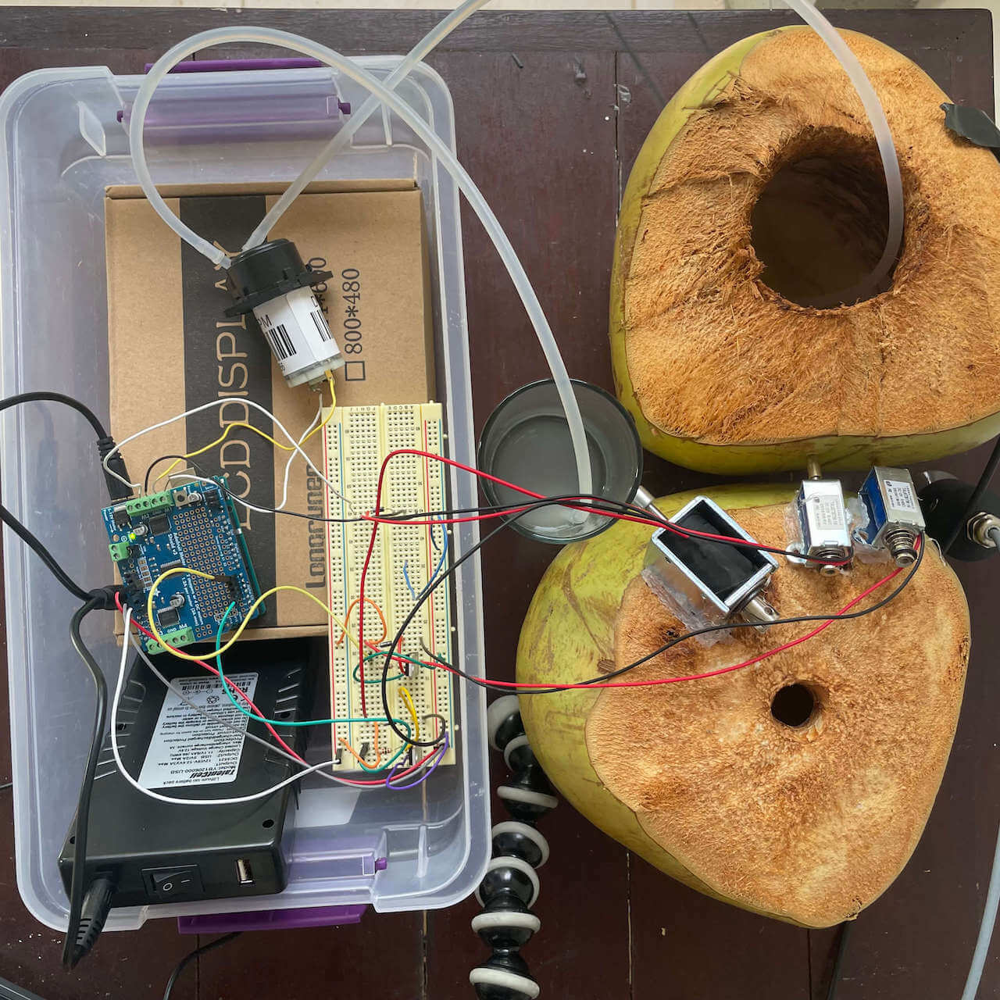
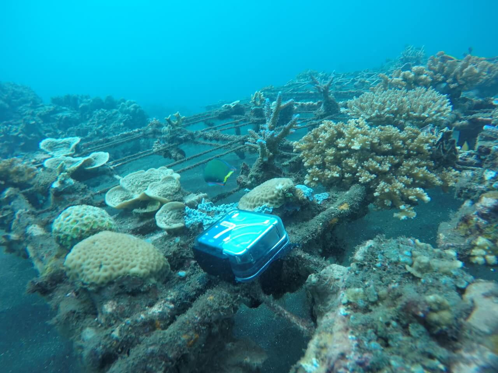

I came to the Digital Naturalism Conference 2025 (Bali, Indonesia) with two rough project ideas. The first was to create a kinetic sound sculpture using found materials, and the second was to record underwater sounds at coral reef restoration sites in Les.
In the last few years I have been working to reduce my reliance on computers and speakers when making sound, in order to engage more with the physical realm. I brought a few solenoids (which use an electromagnet to forcefully move a small piece of metal forward and backward), a peristaltic pump (which moves liquid by squeezing a tube), and the necessary batteries, flyback diodes, transistors, and motor drivers to Dinacon, but had no real plan for how I would put them together. My initial week of Covid isolation provided me with ample time to experiment.
The first iteration of the piece was hot glued to a coconut. Two medium-sized solenoids bonked out the rhythm of a kotekan gamelan pattern on another coconut. The kotekan is an essential feature of Balinese gamelan, consisting of two relatively high-pitch parts which elaborate the basic melody in beautifully intertwined syncopated patterns. I borrowed some notation for the rhythms for these parts from the book Balinese Gamelan Music by Michael Tenzer. In order to reference the abrupt and dynamic tempo changes in Balinese gong kebyar, I included 4 different tempos and added a mechanical switch to change between them. The large solenoid bonked the water glass, representing the gong at the end of each measure. The pump moved water between the glass and the coconut, changing the pitch of the bonks by varying the amount of water in each vessel.
This was a fun proof of concept, which used locally foraged materials and evoked the sound of gamelan. Luci and I added some contact mics and used it for the basis of a deranged noise set that we performed from our Covid cabin. However, there were a few issues—the pump wasn't moving enough water to noticeably change the pitch, the switch didn't work reliably, and all the pieces had to be delicately rebalanced every few minutes to keep it working.
After a few days' break from the piece, William provided some inspiration for a new direction when he mentioned a Ralf Schreiber circuit called Pulse and Pattern that he had built at a previous event. It lets you tap out a pattern on a switch, then plays it back using a motor. We modified the code and circuit to use the three solenoids instead (with help from Andy), and I swapped in some heavy duty arcade switches. When I presented the work at Open Day, local people from Les Village as well as Dinacon participants were able to try out the sculpture, programming their own rhythms into it and listening back on the fly. Luci helped me refine the presentation by placing the sculpture on a banana leaf, alongside a variety of sounding materials gathered for people to play with. This version was less explicitly gamelan inspired, but more interactive and fun. Folks were very engaged!
Scientists believe many underwater creatures use sound for communication, navigation, hunting, and reproduction. But we have very limited knowledge of who's making the sounds and what they mean, especially compared to terrestrial animals like birds. This mystery intrigues me. I was curious how much I could learn about the nature of the reef sounds by looking for patterns in recordings, both with my ears and with assistance from software. If the reefs (and coral nursery tables) could be understood sonically, could sound then be used to survey the success of Sea Communities' coral plantings?
To try to answer these questions, I made a series of recordings. I started with HydroMoths, off-the-shelf self-contained underwater recorders made by Open Acoustic Devices. They are easy to use and deploy, and can record from hours to days or even weeks in the field. Hence they are widely used for Passive Acoustic Monitoring, long-term recordings without human intervention. Since I was in Covid quarantine at the time, Paula and the Sea Communities dive guides helped place and retrieve the HydroMoths for me: one at a coral nursery table and one at a more established reef. I set the recorders to a sample rate of 384kHz, so that sounds above the range of human hearing would be captured. This meant the files were very large, and each captured only about 10 hours of sound before using up its respective SD card. I also filled the recorders' waterproof cases with baby oil to improve their acoustic coupling with the surrounding water.
On the HydroMoth recordings, I heard pistol shrimp, toadfish, some gurgling, diver sounds, boats, and many unidentified sounds which were presumably fish vocalizations. I didn't see anything above the human hearing range on the spectrogram, and since these recordings took place from about 10am to 8pm on a single day, they weren't long enough to extrapolate diurnal patterns. With the help of the dive guides, I placed the HydroMoths for another series of recordings with a lower sample rate that should enable them to record for a few days. Though I am leaving before they can be retrieved, Logan has agreed to steward the HydroMoths for the next several weeks of Dinacon. His research indicates that fish have dawn and dusk choruses, like many other animals—so we are both curious to hear what we learn from this latest round of recordings.
I processed the HydroMoth recordings with the open-source bioacoustics software LEAVES, created by researcher Thomas Napier, which is designed to simplify the technique of unsupervised classification (categorizing sounds without trying to specifically identify them). So far the results have indicated several clusters of theoretically related sounds, but the groupings don't seem to line up with what I'm hearing. More experimentation is in order.
When I emerged from quarantine, Luci and I commissioned a fishing boat to record the reefs from the surface using Zoom field recorders and Aquarian hydrophones dangled into the sea. This method produced high quality recordings and the feedback was more immediate since we were able to listen live via headphones, but the duration of the recordings was limited to our physical presence on the water. Since we had some engine malfunctions and translation challenges, we didn't get much material from this expedition, though it was a fun adventure with great sunset views.
So, can sound be used to understand the coral reefs in Les village? The established reef definitely sounds more active than the coral table. It will take more experimentation with the forthcoming HydroMoth recordings to get a more specific answer. Hopefully the next wave of Dinasaurs can make some breakthroughs!
Thanks to Paula Te, Sea Communities dive guides, Logan Williams, William Kennedy, Andy Quitmeyer and Luci Dayhew for help on these projects.